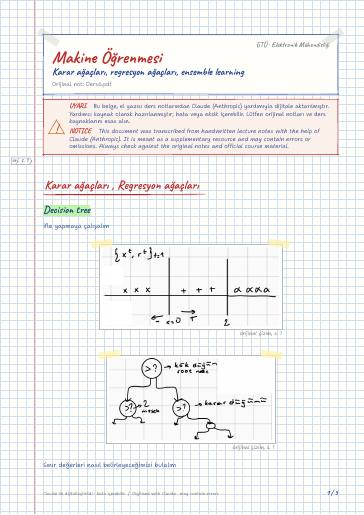

Fundamentals of Machine Learning · Digital lecture note
Lecture 6 – Decision trees, regression trees, ensemble learning
Makine Öğrenmesinin Temelleri – Karar ağaçları, regresyon ağaçları, ensemble learning
- Course
- Fundamentals of Machine Learning (ELM472)
- Semester
- Semester 7 · Fall 2024–25
- Format
- PDF · 5 pages · 0.2 MB · handwriting-style LaTeX
- Language
- Turkish
- Original note
- Ders6.pdf
Open the PDF (0.2 MB)LaTeX source (.tex)Original handwritten note

What is in this note?
Section headings of the note (in Turkish):
- Karar ağaçları , Regresyon ağaçları
- Decision tree
- Impurity measures
- Entropy
- Gini Sabiti
- Regresyon ağaçları
- Ensemble Learning
- Bagging
- Boosting
- Adaboost
Text of the note
Show as plain text (Turkish; formulas and drawings are not included)
Karar ağaçları , Regresyon ağaçları
ifle yapmaya çalışalım
Sınır değerleri nasıl belirleyeceğimizi bulalım
En sonda amaç homojen olarak verileri ayırmak, olabildiğince tek bir sınıf istiyorum
en saf durum tek bir olasılığın 1 kalanın 0 olması
→ tek bir sınıf varsa minimum
çok sınıf varsa maksimum
dallanırken max entropy nerdeyse ordan devam et
Metrik olarak varyans , veya L_1 kullanılabilir.
(Goodness of split)
En büyük sıkıntısı overfitting dalın en alt yaprağına indiğimiz için
L_1 norm aykırı değerlere hassasiyeti az
100 tane karar ağacı alırım, yeni bir örnek geldiği zaman oylama yapıyorum böylece kestirimcinin varyansı küçülür.
Verinin özel bir bölgesine outputta daha iyi bir sınıflandırıcı varsa bu şekilde yaklaşabilir
verinin hangi bölgesinde hangi fonksiyon daha iyi
Aynı modelin parametrelerini değiştirip lineer kombinasyonlarını kullanıyoruz
haftaya feature selection ve dimension reduction işleyeceğiz